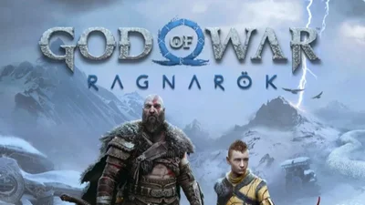

God of War Ragnarök, 19 Eylül'de PC platformuna çıkış yapacak. Sony, God of War Ragnarok sistem gereksinimlerini paylaştı.
Sony, 2020'de merakla beklenen oyun konsolu PlayStation 5'i tanıttıktan sonra, yeni oyun çalışmalarına başlamıştı. God of War: Ragnarok ismiyle çıkış yapan oyun, oyun severleri oldukça memnun etmişti. God of War: Ragnarök, ilk haftasında Sony’nin şimdiye kadar çıkardığı tüm PlayStation oyunlarından daha fazla sattı. Sony’den verilen bilgiye göre, oyun ilk haftasında 5.1 milyon sattı ve The Last of Us Part II, Marvel’s Spider-Man, Uncharted 4: A Thief’s End ve 2018 çıkışlı God of War’u geride bıraktı.
Sony, State of Play etkinliğinde God of War Ragnarök'ün PC'ye geleceğini açıklamıştı. Steam'de paylaşılan bilgiye göre God of War Ragnarök, 19 Eylül 2024 tarihinde yayınlanacak.